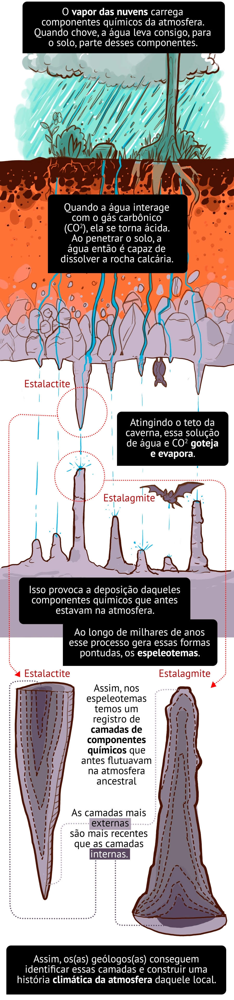
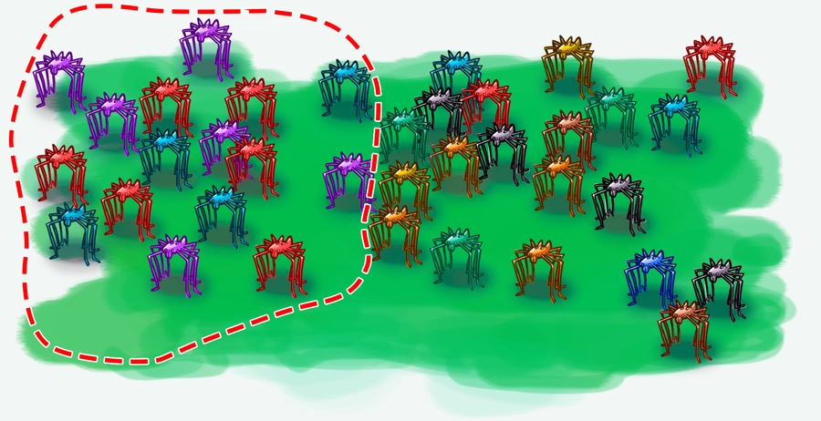
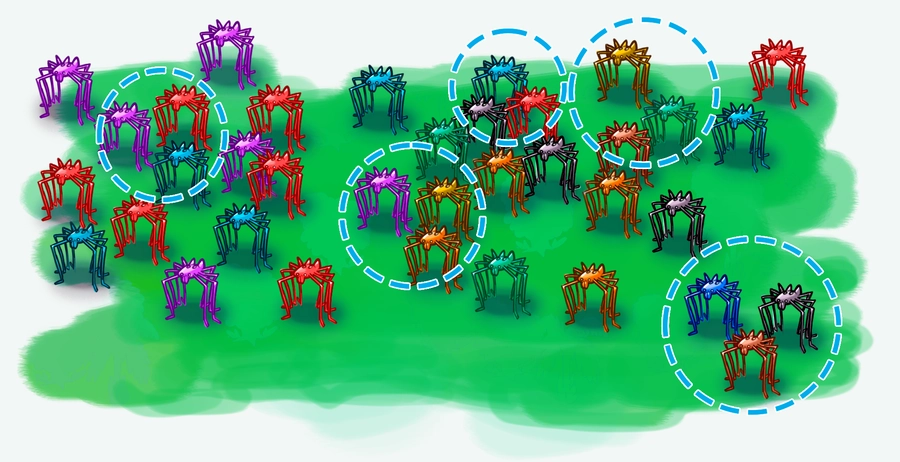

União das ciências para prever o futuro da Mata Atlântica
Como os animais e plantas da Mata Atlântica vão responder às atuais mudanças climáticas e desmatamento?
Para responder a essa pergunta, são necessárias informações de diferentes áreas do conhecimento. Por
isso, o projeto AF Biota reuniu pesquisas das áreas de
evolução
üí¨,
genética
de popula√ß√µes üí¨,
fisiologia
üí¨,
geografia
üí¨,
geologia
üí¨,
paleontologia
üí¨,
filogenética
üí¨
e sensoriamento remoto üí¨.
Para esclarecer como as mudanças do ambiente do passado afetaram as plantas e os animais da Mata
Atlântica, o primeiro passo é entender se esses eventos já aconteceram no passado e quais foram as suas
consequências.
O estudo de cavernas é uma importante ferramenta nesse processo de investigação, pois lá ocorrem os
espeleotemas, formações rochosas que se formam no chão e no teto das cavernas, geralmente em formato de
cone. Estudando essas estruturas os geólogos podem entender como foi o clima daquele local ao longo de
milhões de anos.

Ao entender o clima do passado, é possível prever melhor como pode ser o clima no futuro. No passado
recente - cerca de 180 mil anos atrás até hoje - ocorreram dois períodos glaciais. E entre esses
períodos, a temperatura média da Terra aumentou. Apesar desse aquecimento ter sido bem mais lento (ao
longo de cerca de 50 mil anos) do que o que está acontecendo agora, no aquecimento global que vivemos
hoje, a comparação ainda é útil para as hipóteses e previsões de como será o futuro do nosso planeta.
Unindo as previsões climáticas com o conhecimento de como as espécies de animais e plantas responderam a
mudanças climáticas no passado, é possível extrapolar e tentar prever como elas podem responder às
mudanças climáticas atuais.
Por exemplo, com o aquecimento global ocorrerá o derretimento das geleiras e como consequência o nível
do mar poderá aumentar. Isso pode levar ao alagamento de áreas próximas ao litoral, como grande parte da
área ocupada pela Mata Atlântica. Com isso, o mar pode invadir as regiões mais baixas e isolar as
regiões mais altas, criando ilhas onde antes eram montanhas. Esse processo pode separar populações de
organismos. Isso pode tanto gerar novas espécies quanto extingui-las ou diminuir sua diversidade.
A reconstrução da história da Mata Atlântica permite definir quais áreas desse bioma devem ser
priorizadas no trabalho de conservação e listar quais grupos de seres vivos estão mais ameaçados de
extinção.
Por exemplo, os opiliões, aracnídeos que habitam cavernas e assoalhos na Mata Atlântica, podem dar
pistas de como conservar esse bioma. Ao mapear a presença desses seres, é possível concluir que nenhuma
área de floresta é exatamente igual à outra. Por exemplo, áreas do nordeste da Mata Atlântica possuem
composições muito diferentes de espécies de opiliões em comparação com áreas mais ao sul desse mesmo
bioma.
Com isso, uma das recomendações dos estudos do AF Biota é que, para garantir a conservação da
diversidade dessas espécies, a prioridade de conservação seria a de ter um maior número de áreas sendo
conservadas, em vez de se preservar uma única e grande área.


Conhecer um bioma tão diverso como a Mata Atlântica é um trabalho que exige conhecimento de todas as
partes que compõem esse sistema tão complexo. Os estudos interdisciplinares do AF Biota são
importantes
ferramentas para compor esse quebra-cabeças que é a Mata Atlântica, sua história, suas espécies e
seu
clima. Com essas informações, podem surgir medidas e propostas realmente eficazes para a conservação
e
recuperação desse bioma. ○